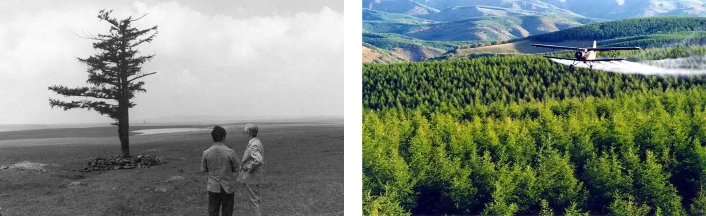

2022年北京市中考政治真题 · 选择题 第11、12、13、14、15题
11.
法治社会建设实施纲要 （2020-2025年） | 法治中国建设规划 （2020-2025年） | 法治政府建设实施纲要 （2021-2025年） |
2020年12月 | 2021年1月 | 2021年8月 |
上图中的“一规划两纲要”，共同构建起新时代中国特色社会主义法治建设的顶层设计，描绘了一幅更加恢宏的法治画卷。在实现中华民族伟大复兴的进程中，坚定不移地走法治道路，要求（ ）
①公民自觉守法、严格执法，维护社会公平正义 ②坚持法治国家、法治政府和法治社会一体建设
③实行良法善治，因为有了法律制度就有了法治 ④行政机关 各项权力都应该在法治轨道上运行
各项权力都应该在法治轨道上运行
A. ①②B. ①③C. ②④D. ③④
12. “仓宝”是2022年联合国中文日暨中央广播电视总台第二届海外影像节的数字虚拟形象。“仓宝”的名字来源于传说中的中华文字始祖仓颉的“仓”字。它身背甲骨文小书包，头戴中国传统斗笠，携带一支“神笔”，记录美好。“仓宝”这一形象（ ）
①意在学习和借鉴优秀外来文化 ②体现了中华文化源远流长
③有助于让世界更好地了解中华文化 ④表明传统文化和数字技术相结合才能得到传承
A. ①②B. ①④C. ②③D. ③④
13. 2021年10月，中央人大工作会议在北京召开。这是在党的历史上、人民代表大会制度历史上第一次以“中央人大工作会议”为名召开的会议。这次会议为加强和改进新时代人大工作指明了方向。加强和改进新时代人大工作（ ）
①要加强中国共产党对人大工作的全面领导
②要充分发挥人大代表作用，密切与人民群众的联系
③要求人民代表大会履行政治协商、民主监督和参政议政的职能
④要求人民代表大会作为最高国家权力机关，统一行使国家权力
A. ①②B. ①③C. ②④D. ③④
14.

上图中的两张照片间隔60年，拍摄的是塞罕坝林场的同一地点。经过三代林场人的艰苦奋斗，塞罕坝已成为中国生态文明建设范例，林场建设者被联合国环境规划署授予“地球卫士奖”。塞罕坝从“一棵树”到一片林海的巨变（ ）
①为世界可持续发展提供了可借鉴的宝贵经验 ②说明人类应该避免对自然进行开发和利用
③体现了我国自然资源丰富，总量大，种类多 ④说明我国坚持绿色发展，追求人与自然和谐共生
A. ①②B. ①④C. ②③D. ③④
15.
▷90后的她赴老挝对当地学员进行货运培训，与海关、客户对接货运工作，为中老铁路客货两旺、惠及民生作出了贡献。 ▷他作为青年技术专家，前往中非共和国推广菌草技术，带动当地农户了解和种植菌草。当地人也把菌草称作减贫致富的“幸福草”。 ▷80后的他在阿拉伯半岛参加中沙联合考古队，双方队员交流技术、学习彼此的语言和文化。他们的考古发现为海上丝绸之路学术研究提供了珍贵的实物资料。 |
如果给上述这组新闻起一个标题，最恰当的是（ ）
A. 当今世界，面临着各种风险与挑战的考验B. 合作共赢，中国为世界提供更广阔的市场
C. 青年以更加开放的态度参与全球规则制定D. 为推动构建人类命运共同体贡献青春力量